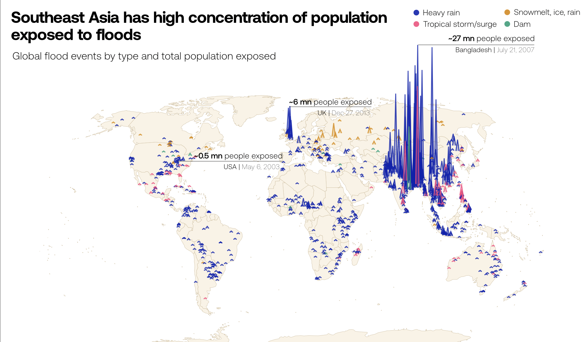
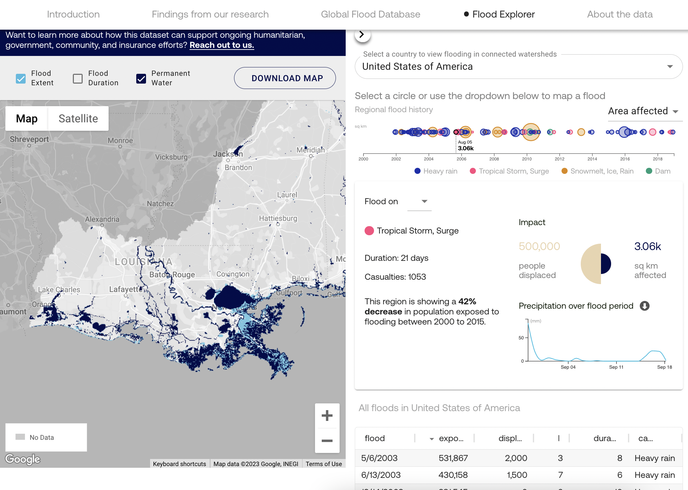
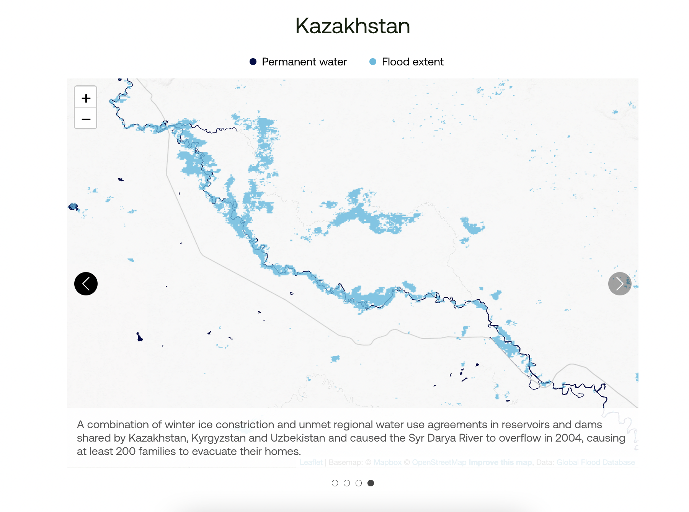

RESPONSIBILITIES
Design, information visualization, writing
ABOUT
The Global Flood Database is the largest collection of historical floodmaps in the world. Created in collaboration with Cloud to Street, this website provides a user interface to explore over 15 years worth of flood data.
To introduce the significance of this database, we created a narrative story that summarizes climate change displacement research. The database is then visualized as an interactive dashboard, allowing the user to explore historic events and their impact on vulnerable populations.

